World Ocean Atlas 2018
Jens Daniel Müller
07 April, 2022
Last updated: 2022-04-07
Checks: 7 0
Knit directory: emlr_obs_preprocessing/
This reproducible R Markdown analysis was created with workflowr (version 1.7.0). The Checks tab describes the reproducibility checks that were applied when the results were created. The Past versions tab lists the development history.
Great! Since the R Markdown file has been committed to the Git repository, you know the exact version of the code that produced these results.
Great job! The global environment was empty. Objects defined in the global environment can affect the analysis in your R Markdown file in unknown ways. For reproduciblity it’s best to always run the code in an empty environment.
The command set.seed(20200707) was run prior to running the code in the R Markdown file. Setting a seed ensures that any results that rely on randomness, e.g. subsampling or permutations, are reproducible.
Great job! Recording the operating system, R version, and package versions is critical for reproducibility.
Nice! There were no cached chunks for this analysis, so you can be confident that you successfully produced the results during this run.
Great job! Using relative paths to the files within your workflowr project makes it easier to run your code on other machines.
Great! You are using Git for version control. Tracking code development and connecting the code version to the results is critical for reproducibility.
The results in this page were generated with repository version af08e38. See the Past versions tab to see a history of the changes made to the R Markdown and HTML files.
Note that you need to be careful to ensure that all relevant files for the analysis have been committed to Git prior to generating the results (you can use wflow_publish or wflow_git_commit). workflowr only checks the R Markdown file, but you know if there are other scripts or data files that it depends on. Below is the status of the Git repository when the results were generated:
Ignored files:
Ignored: .Rhistory
Ignored: .Rproj.user/
Ignored: data/
Ignored: output/
Untracked files:
Untracked: code/IO_1990_own_crossover_analysis_backup.R
Untracked: code/analysis_regional_clusters.Rmd
Untracked: code/read_GLODAPv2_2020.Rmd
Unstaged changes:
Modified: code/Workflowr_project_managment.R
Note that any generated files, e.g. HTML, png, CSS, etc., are not included in this status report because it is ok for generated content to have uncommitted changes.
These are the previous versions of the repository in which changes were made to the R Markdown (analysis/read_World_Ocean_Atlas_2018.Rmd) and HTML (docs/read_World_Ocean_Atlas_2018.html) files. If you’ve configured a remote Git repository (see ?wflow_git_remote), click on the hyperlinks in the table below to view the files as they were in that past version.
| File | Version | Author | Date | Message |
|---|---|---|---|---|
| html | 9451c4b | jens-daniel-mueller | 2022-04-06 | Build site. |
| Rmd | 5d7b7c9 | jens-daniel-mueller | 2022-04-06 | rerun all with lat max 65N |
| html | 7e94d73 | jens-daniel-mueller | 2022-04-06 | Build site. |
| html | 527e41b | jens-daniel-mueller | 2022-04-02 | Build site. |
| Rmd | 65f212d | jens-daniel-mueller | 2022-04-02 | test alternative density values |
| html | 8aa0950 | jens-daniel-mueller | 2022-04-02 | Build site. |
| Rmd | ce7429a | jens-daniel-mueller | 2022-04-02 | test alternative density values |
| html | f088f55 | jens-daniel-mueller | 2022-04-01 | Build site. |
| Rmd | d23e425 | jens-daniel-mueller | 2022-04-01 | rerun all including arctic and North Atlantic biome |
| html | dde77eb | jens-daniel-mueller | 2022-04-01 | Build site. |
| Rmd | a1ea47d | jens-daniel-mueller | 2022-04-01 | rerun all including arctic and North Atlantic biome |
| html | 02a01ef | jens-daniel-mueller | 2022-03-10 | Build site. |
| Rmd | c6d5f07 | jens-daniel-mueller | 2022-03-10 | revised crossover analysis |
| html | fecc329 | jens-daniel-mueller | 2022-02-25 | Build site. |
| Rmd | 4030fe6 | jens-daniel-mueller | 2022-02-25 | added cruise by cruise offset analysis |
| html | 6e65117 | jens-daniel-mueller | 2022-02-16 | Build site. |
| html | f2871b9 | jens-daniel-mueller | 2021-11-20 | Build site. |
| html | 0908ee5 | jens-daniel-mueller | 2021-11-15 | Build site. |
| html | 6d6a23e | jens-daniel-mueller | 2021-11-01 | Build site. |
| Rmd | 2f36786 | jens-daniel-mueller | 2021-11-01 | preprocess adjustment table, create new basinmaps |
| html | 2a50fa9 | jens-daniel-mueller | 2021-10-28 | Build site. |
| Rmd | 67de9ab | jens-daniel-mueller | 2021-10-28 | preprocess tracers |
| html | fb9c1e9 | jens-daniel-mueller | 2021-09-28 | Build site. |
| Rmd | 67d6850 | jens-daniel-mueller | 2021-09-28 | SO_2 basin mask created |
| html | 90b0670 | jens-daniel-mueller | 2021-08-06 | Build site. |
| Rmd | 1a3fb91 | jens-daniel-mueller | 2021-08-06 | added 1 basin mask, included reccap2 atm co2 |
| html | 217cf5e | jens-daniel-mueller | 2021-07-16 | Build site. |
| Rmd | da1b770 | jens-daniel-mueller | 2021-07-16 | added SO_5 basin mask |
| html | e49875a | jens-daniel-mueller | 2021-07-07 | Build site. |
| html | 6312bd4 | jens-daniel-mueller | 2021-07-07 | Build site. |
| html | 58bc706 | jens-daniel-mueller | 2021-07-06 | Build site. |
| Rmd | 0db89e1 | jens-daniel-mueller | 2021-07-06 | rerun with revised variable names |
| html | f600971 | jens-daniel-mueller | 2021-07-02 | Build site. |
| html | 265c4ef | jens-daniel-mueller | 2021-06-04 | Build site. |
| Rmd | 00065c8 | jens-daniel-mueller | 2021-06-04 | included OceanSODA |
| html | c79346a | jens-daniel-mueller | 2021-06-03 | Build site. |
| html | 0ef91d5 | jens-daniel-mueller | 2021-05-12 | Build site. |
| Rmd | f091aa5 | jens-daniel-mueller | 2021-05-12 | removed Sea of Japan from basin mask |
| html | ace484d | jens-daniel-mueller | 2021-05-12 | Build site. |
| Rmd | 149c948 | jens-daniel-mueller | 2021-05-12 | removed Sea of Japan from basin mask |
| html | 6ff516e | jens-daniel-mueller | 2021-03-30 | Build site. |
| html | 86aee67 | jens-daniel-mueller | 2021-03-26 | Build site. |
| Rmd | 96f4b3a | jens-daniel-mueller | 2021-03-26 | darker grey for landmask |
| html | a5846c5 | jens-daniel-mueller | 2020-12-18 | Build site. |
| Rmd | 5538466 | jens-daniel-mueller | 2020-12-18 | subsetted WOA depth levels to 33 standard depths |
| html | 88967c0 | jens-daniel-mueller | 2020-12-16 | Build site. |
| html | fd1a2c9 | jens-daniel-mueller | 2020-12-15 | cleaned for copying |
| html | ed3e64c | jens-daniel-mueller | 2020-12-15 | Build site. |
| html | 64cfdd6 | jens-daniel-mueller | 2020-12-15 | Build site. |
| Rmd | 6f2a669 | jens-daniel-mueller | 2020-12-15 | code and output cleaning |
| html | 2fdd2a7 | jens-daniel-mueller | 2020-12-14 | Build site. |
| html | cc07d29 | jens-daniel-mueller | 2020-12-14 | Build site. |
| Rmd | 325e1fa | jens-daniel-mueller | 2020-12-14 | rebuild with new root folder |
| html | 4ded3cd | jens-daniel-mueller | 2020-12-14 | Build site. |
| Rmd | a09b95f | jens-daniel-mueller | 2020-12-14 | rebuild with new root folder |
| html | 474daac | jens-daniel-mueller | 2020-12-12 | Build site. |
| Rmd | 53d8356 | jens-daniel-mueller | 2020-12-12 | removed basinmask issues |
| html | 5c773fa | jens-daniel-mueller | 2020-12-11 | Build site. |
| html | ae7aa2e | jens-daniel-mueller | 2020-12-11 | Build site. |
| Rmd | ec6f803 | jens-daniel-mueller | 2020-12-11 | apply only lat max but not basinmak |
| html | 914159f | jens-daniel-mueller | 2020-12-11 | Build site. |
| Rmd | 30eb59a | jens-daniel-mueller | 2020-12-11 | created basin masks for analysis |
| html | 9c5d86d | jens-daniel-mueller | 2020-12-11 | Build site. |
| Rmd | 8a8db38 | jens-daniel-mueller | 2020-12-11 | renamed tem to temp |
| html | 999cd9d | jens-daniel-mueller | 2020-12-02 | Build site. |
| html | e28cc90 | jens-daniel-mueller | 2020-11-30 | Build site. |
| Rmd | cd676e8 | jens-daniel-mueller | 2020-11-30 | created global parameterization file params_global.rds |
| html | 825309e | jens-daniel-mueller | 2020-11-27 | Build site. |
| Rmd | 4dd5bda | jens-daniel-mueller | 2020-11-27 | correct source link, basinmask and plotting function |
| html | 58359ac | jens-daniel-mueller | 2020-11-27 | Build site. |
| Rmd | 2f37595 | jens-daniel-mueller | 2020-11-27 | first rebuild after splitting the preprocessing part |
| Rmd | cb7a9ca | jens-daniel-mueller | 2020-11-27 | linked to local paths on server |
| Rmd | 92e10aa | Jens Müller | 2020-11-27 | Initial commit |
| html | 92e10aa | Jens Müller | 2020-11-27 | Initial commit |
1 Data source
- Data source: World Ocean Atlas 2018
2 Climatology S and T
Copied from the WOA FAQ website, the file naming conventions is:
PREF_DDDD_VTTFFGG.EXT, where:
- PREF: prefix
- DDDD: decade
- V: variable
- TT: time period
- FF: field type
- GG: grid (5deg- 5°, 01- 1°, 04 - 1/4°)
- EXT: file extention
Short description of two statistical fields in WOA
- Objectively analyzed climatologies are the objectively interpolated mean fields for oceanographic variables at standard - depth levels for the World Ocean.
- The statistical mean is the average of all unflagged interpolated values at each standard depth level for each variable - in each 1° square which contains at least one measurement for the given oceanographic variable.
Here, we use
- Fields: objectively analyzed mean
- Decades: all decades
- Grid: 1 deg resolution
According to the WOA18 documentation document:
What are the units for temperature and salinity in the WOA18?
In situ temperatures used for WOA18 are not converted from their original scale, so there is a mix of IPTS-48, IPTS-68, and ITS-90 (and pre IPTS-48 temperatures). The differences between scales are small (on the order of 0.01°C) and should not have much effect on the climatological means, except, possibly at very deep depths. Values for salinity are on the Practical salinity scale (PSS-78). Pre-1978 salinity values converted from conductivity may have used a different salinity scale. Pre-conductivity salinities use the Knudsen method.
2.1 Read nc files
# temperature
WOA18_temp <- tidync(paste(
path_woa2018,
"temperature/decav/1.00/woa18_decav_t00_01.nc",
sep = ""
))
WOA18_temp_tibble <- WOA18_temp %>%
hyper_tibble()
WOA18_temp_tibble <- WOA18_temp_tibble %>%
select(temp = t_an, lon, lat, depth) %>%
drop_na() %>%
mutate(lon = if_else(lon < 20, lon + 360, lon))
# salinity
WOA18_sal <- tidync(paste(
path_woa2018,
"salinity/decav/1.00/woa18_decav_s00_01.nc",
sep = ""
))
WOA18_sal_tibble <- WOA18_sal %>% hyper_tibble()
WOA18_sal_tibble <- WOA18_sal_tibble %>%
select(sal = s_an, lon, lat, depth) %>%
drop_na() %>%
mutate(lon = if_else(lon < 20, lon + 360, lon))
rm(WOA18_sal, WOA18_temp)2.2 Join predictors
WOA18_sal_temp <- full_join(WOA18_sal_tibble, WOA18_temp_tibble)
rm(WOA18_sal_tibble, WOA18_temp_tibble)2.3 Apply basin mask
# use only three basin to assign general basin mask
# ie this is not specific to the MLR fitting
basinmask <- basinmask %>%
filter(MLR_basins == "2") %>%
select(lat, lon, basin_AIP)
# restrict predictor fields to basin mask grid
WOA18_sal_temp <- inner_join(WOA18_sal_temp, basinmask)2.4 Subset depth levels
WOA18_sal_temp <- WOA18_sal_temp %>%
filter(depth %in% params_global$depth_levels_33)2.5 Potential temperature
Potential temperature is calculated as in input variable for the neutral density calculation.
2.5.1 Calculation
WOA18_sal_temp <- WOA18_sal_temp %>%
mutate(THETA = swTheta(salinity = sal,
temperature = temp,
pressure = depth,
referencePressure = 0,
longitude = lon - 180,
latitude = lat))2.5.2 Profile
Example profile from North Atlantic Ocean.
WOA18_sal_temp %>%
filter(lat == params_global$lat_Atl_profile,
lon == params_global$lon_Atl_section) %>%
ggplot() +
geom_line(aes(temp, depth, col = "insitu")) +
geom_point(aes(temp, depth, col = "insitu")) +
geom_line(aes(THETA, depth, col = "theta")) +
geom_point(aes(THETA, depth, col = "theta")) +
scale_y_reverse() +
scale_color_brewer(palette = "Dark2", name = "Scale")
| Version | Author | Date |
|---|---|---|
| 86aee67 | jens-daniel-mueller | 2021-03-26 |
| a5846c5 | jens-daniel-mueller | 2020-12-18 |
| 88967c0 | jens-daniel-mueller | 2020-12-16 |
| fd1a2c9 | jens-daniel-mueller | 2020-12-15 |
| ae7aa2e | jens-daniel-mueller | 2020-12-11 |
| 914159f | jens-daniel-mueller | 2020-12-11 |
| 9c5d86d | jens-daniel-mueller | 2020-12-11 |
| 58359ac | jens-daniel-mueller | 2020-11-27 |
| 92e10aa | Jens Müller | 2020-11-27 |
2.5.3 Section
p_section_global(
df = WOA18_sal_temp,
var = "THETA")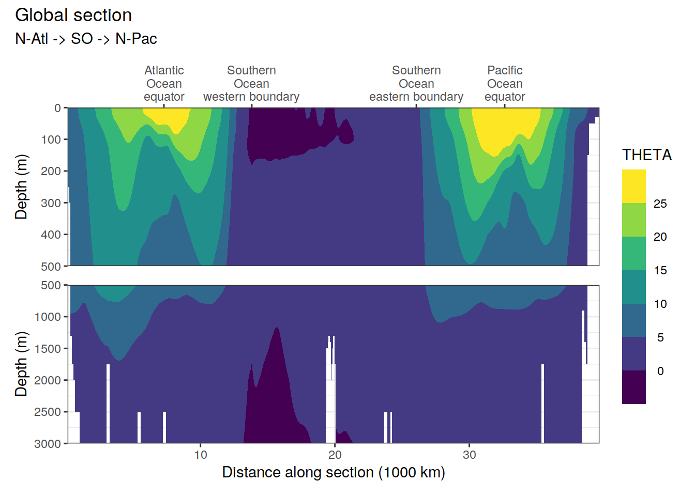
| Version | Author | Date |
|---|---|---|
| f088f55 | jens-daniel-mueller | 2022-04-01 |
| dde77eb | jens-daniel-mueller | 2022-04-01 |
| 86aee67 | jens-daniel-mueller | 2021-03-26 |
| a5846c5 | jens-daniel-mueller | 2020-12-18 |
| 88967c0 | jens-daniel-mueller | 2020-12-16 |
| fd1a2c9 | jens-daniel-mueller | 2020-12-15 |
| 914159f | jens-daniel-mueller | 2020-12-11 |
| 58359ac | jens-daniel-mueller | 2020-11-27 |
| 92e10aa | Jens Müller | 2020-11-27 |
2.6 Neutral density
Neutral density gamma was calculated with a Python script provided by Serazin et al (2011), which performs a polynomial approximation of the original gamma calculation.
2.6.1 Calculation
# calculate pressure from depth
WOA18_sal_temp <- WOA18_sal_temp %>%
mutate(CTDPRS = gsw_p_from_z(-depth,
lat))
# rename variables according to python script
WOA18_sal_temp_gamma_prep <- WOA18_sal_temp %>%
rename(LATITUDE = lat,
LONGITUDE = lon,
SALNTY = sal)
# load python scripts
source_python(paste(
path_functions,
"python_scripts/Gamma_GLODAP_python.py",
sep = ""
))
# calculate gamma
WOA18_sal_temp_gamma_calc <-
calculate_gamma(WOA18_sal_temp_gamma_prep)
# reverse variable naming
WOA18_sal_temp <- WOA18_sal_temp_gamma_calc %>%
select(-c(CTDPRS, THETA)) %>%
rename(
lat = LATITUDE,
lon = LONGITUDE,
sal = SALNTY,
gamma = GAMMA
)
WOA18_sal_temp <- as_tibble(WOA18_sal_temp)
rm(WOA18_sal_temp_gamma_calc, WOA18_sal_temp_gamma_prep)# calculate pressure from depth
WOA18_sal_temp_dens <- WOA18_sal_temp %>%
mutate(
p = gsw_p_from_z(z = -depth, latitude = lat),
CT = gsw_CT_from_t(SA = sal, t = temp, p = p),
sigma0 = gsw_sigma0(SA = sal, CT = CT),
sigma1 = gsw_sigma1(SA = sal, CT = CT),
sigma4 = gsw_sigma4(SA = sal, CT = CT),
rho = gsw_rho(SA = sal, CT = CT, p = p) -1000
)
WOA18_sal_temp_dens <- WOA18_sal_temp_dens %>%
select(lon, lat, depth, basin_AIP,
gamma, starts_with("sigma"), rho) %>%
pivot_longer(gamma:rho,
names_to = "estimate",
values_to = "value")
WOA18_sal_temp_dens %>%
group_split(estimate) %>%
# head(1) %>%
map(~ p_map_climatology(df = .x,
var = "value",
title_text = unique(.x$estimate)))[[1]]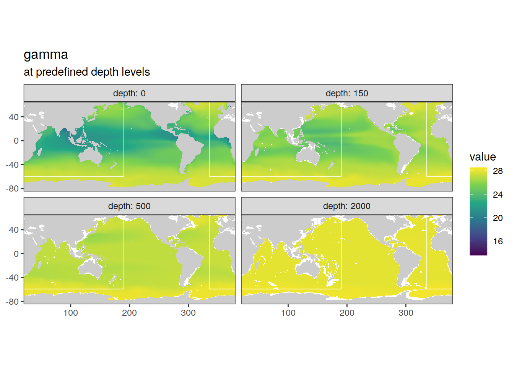
[[2]]
[[3]]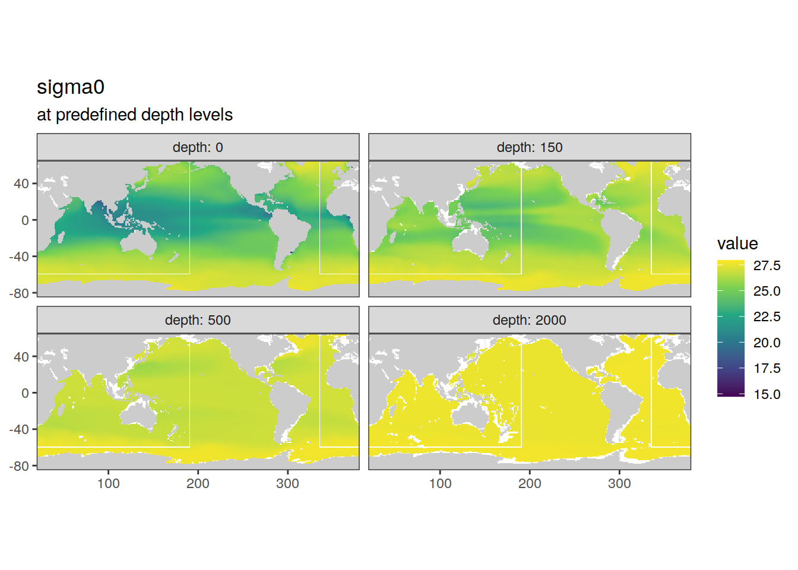
[[4]]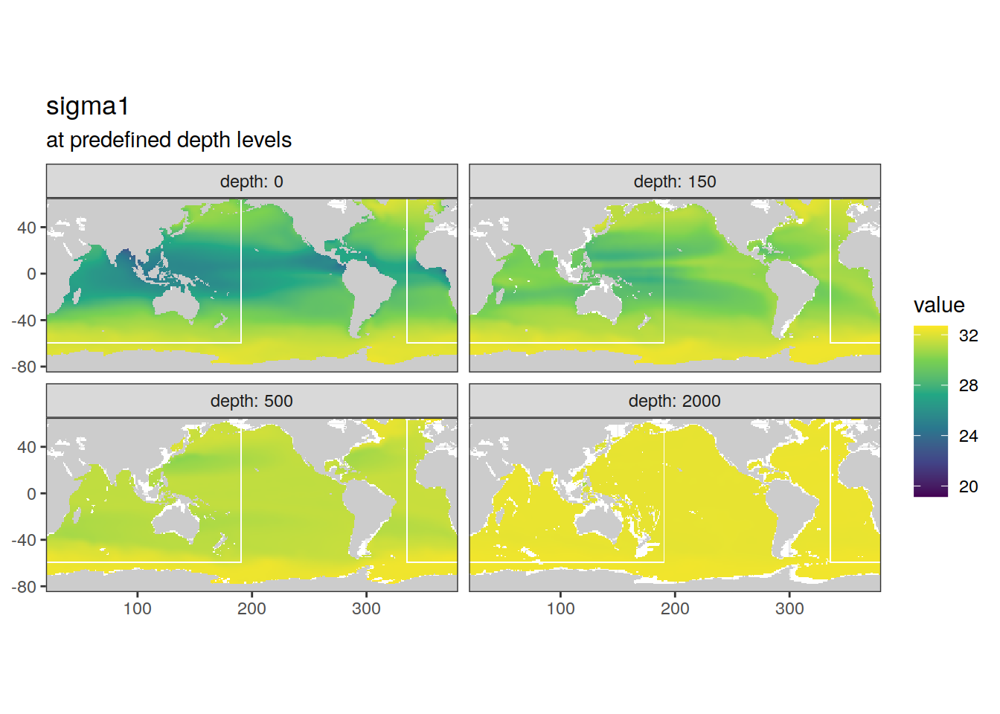
[[5]]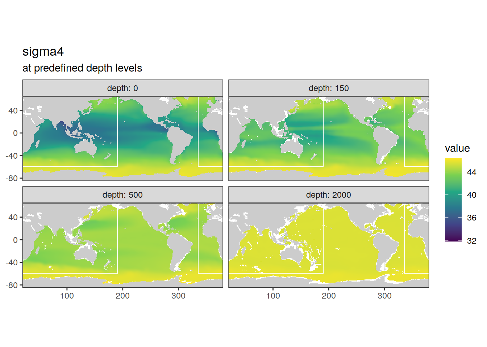
WOA18_sal_temp_dens %>%
group_split(estimate) %>%
# head(1) %>%
map(~ p_section_global(df = .x,
var = "value",
title_text = unique(.x$estimate)))[[1]]
| Version | Author | Date |
|---|---|---|
| 8aa0950 | jens-daniel-mueller | 2022-04-02 |
[[2]]
| Version | Author | Date |
|---|---|---|
| 8aa0950 | jens-daniel-mueller | 2022-04-02 |
[[3]]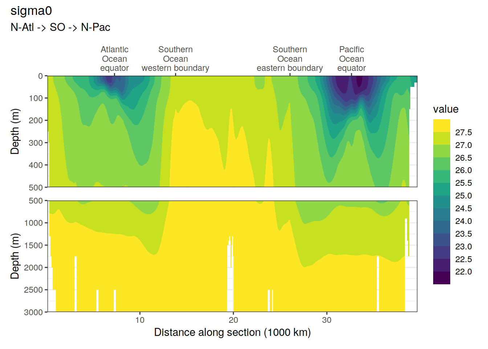
| Version | Author | Date |
|---|---|---|
| 8aa0950 | jens-daniel-mueller | 2022-04-02 |
[[4]]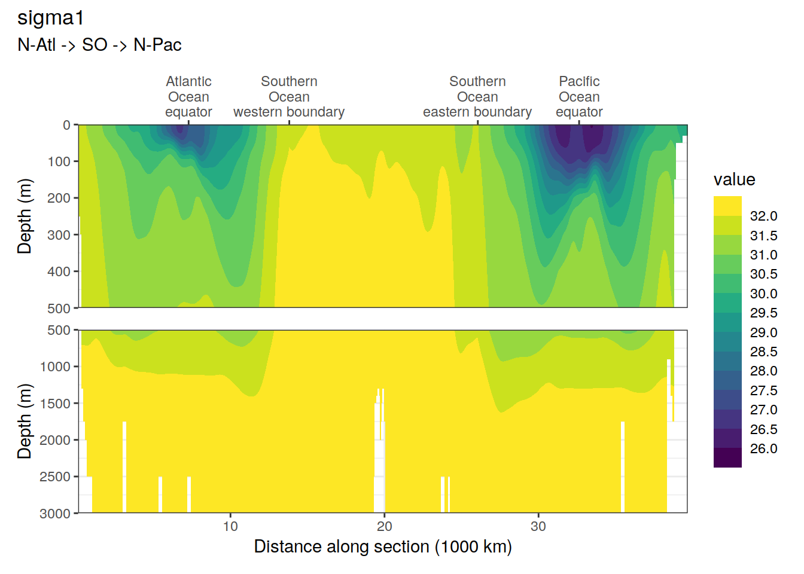
| Version | Author | Date |
|---|---|---|
| 8aa0950 | jens-daniel-mueller | 2022-04-02 |
[[5]]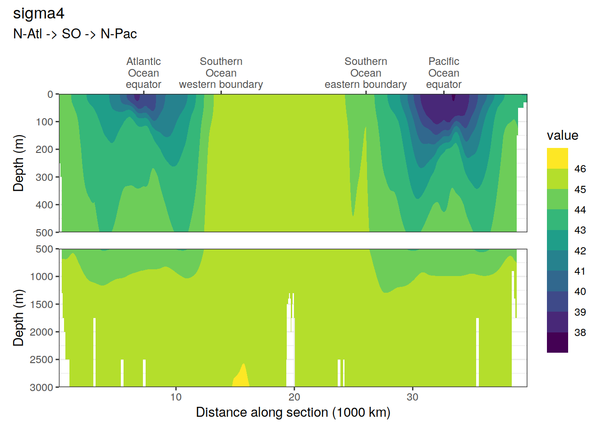
| Version | Author | Date |
|---|---|---|
| 8aa0950 | jens-daniel-mueller | 2022-04-02 |
WOA18_sal_temp_dens <- WOA18_sal_temp_dens %>%
arrange(estimate) %>%
group_by(lon, lat, depth) %>%
mutate(delta_value = value - first(value),
delta_estimate = paste(estimate, first(estimate), sep = "-")) %>%
ungroup()
WOA18_sal_temp_dens %>%
group_split(delta_estimate) %>%
# head(2) %>%
map( ~ p_map_climatology(
df = .x,
var = "delta_value",
col = "divergent",
title_text = unique(.x$delta_estimate)
))[[1]]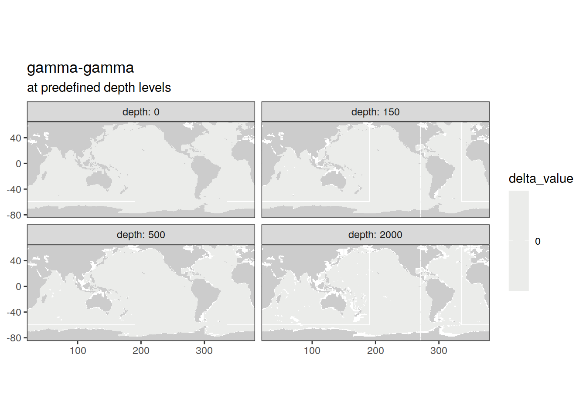
[[2]]
[[3]]
[[4]]
[[5]]
WOA18_sal_temp_dens %>%
group_split(delta_estimate) %>%
# head(2) %>%
map( ~ p_section_global(
df = .x,
var = "delta_value",
col = "divergent",
subtitle_text = unique(.x$delta_estimate)
))[[1]]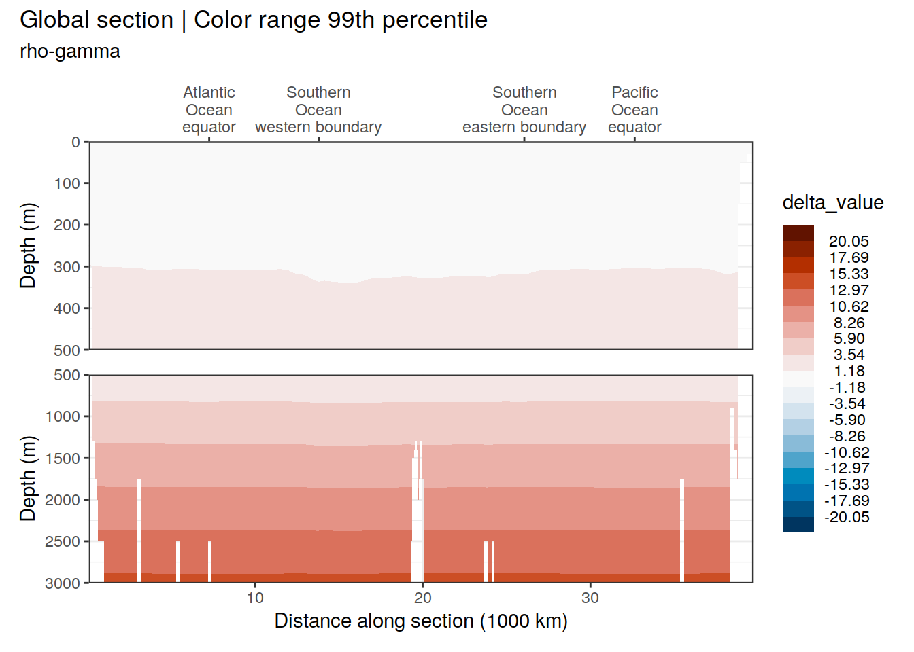
[[2]]
[[3]]
[[4]]
[[5]]
rm(WOA18_sal_temp_dens)2.7 Write file
WOA18_sal_temp %>%
write_csv(paste(path_preprocessing,
"WOA18_sal_temp.csv",
sep = ""))2.8 Temperature plots
Below, following subsets of the climatologies are plotted for all relevant parameters:
- Horizontal planes at 0, 150, 500, 2000, 5, 155, 483, 1969, 3, 160, 534, 2054m
- Global section as defined above and indicated as white lines in maps.
2.8.1 Surface map
p_map_climatology(
df = WOA18_sal_temp,
var = "temp")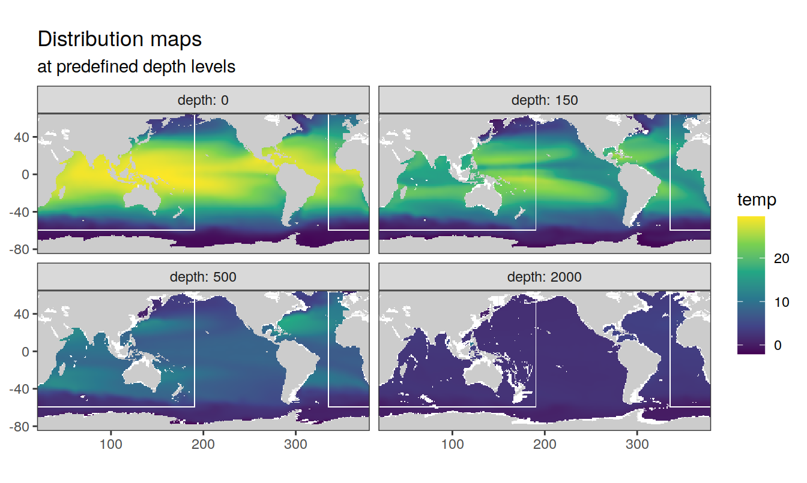
| Version | Author | Date |
|---|---|---|
| 9451c4b | jens-daniel-mueller | 2022-04-06 |
| 7e94d73 | jens-daniel-mueller | 2022-04-06 |
| f088f55 | jens-daniel-mueller | 2022-04-01 |
| dde77eb | jens-daniel-mueller | 2022-04-01 |
| 02a01ef | jens-daniel-mueller | 2022-03-10 |
| fecc329 | jens-daniel-mueller | 2022-02-25 |
| 2a50fa9 | jens-daniel-mueller | 2021-10-28 |
| 0ef91d5 | jens-daniel-mueller | 2021-05-12 |
| ace484d | jens-daniel-mueller | 2021-05-12 |
| 86aee67 | jens-daniel-mueller | 2021-03-26 |
| 88967c0 | jens-daniel-mueller | 2020-12-16 |
| fd1a2c9 | jens-daniel-mueller | 2020-12-15 |
| cc07d29 | jens-daniel-mueller | 2020-12-14 |
| ae7aa2e | jens-daniel-mueller | 2020-12-11 |
| 914159f | jens-daniel-mueller | 2020-12-11 |
| 9c5d86d | jens-daniel-mueller | 2020-12-11 |
| 58359ac | jens-daniel-mueller | 2020-11-27 |
| 92e10aa | Jens Müller | 2020-11-27 |
2.8.2 Section
p_section_global(
df = WOA18_sal_temp,
var = "temp")
| Version | Author | Date |
|---|---|---|
| f088f55 | jens-daniel-mueller | 2022-04-01 |
| dde77eb | jens-daniel-mueller | 2022-04-01 |
| 86aee67 | jens-daniel-mueller | 2021-03-26 |
| a5846c5 | jens-daniel-mueller | 2020-12-18 |
| 88967c0 | jens-daniel-mueller | 2020-12-16 |
| fd1a2c9 | jens-daniel-mueller | 2020-12-15 |
| 914159f | jens-daniel-mueller | 2020-12-11 |
| 9c5d86d | jens-daniel-mueller | 2020-12-11 |
| 58359ac | jens-daniel-mueller | 2020-11-27 |
| 92e10aa | Jens Müller | 2020-11-27 |
2.9 Salinity plots
2.9.1 Surface map
p_map_climatology(
df = WOA18_sal_temp,
var = "sal")
| Version | Author | Date |
|---|---|---|
| 9451c4b | jens-daniel-mueller | 2022-04-06 |
| 7e94d73 | jens-daniel-mueller | 2022-04-06 |
| f088f55 | jens-daniel-mueller | 2022-04-01 |
| dde77eb | jens-daniel-mueller | 2022-04-01 |
| 02a01ef | jens-daniel-mueller | 2022-03-10 |
| fecc329 | jens-daniel-mueller | 2022-02-25 |
| 2a50fa9 | jens-daniel-mueller | 2021-10-28 |
| 0ef91d5 | jens-daniel-mueller | 2021-05-12 |
| ace484d | jens-daniel-mueller | 2021-05-12 |
| 86aee67 | jens-daniel-mueller | 2021-03-26 |
| 88967c0 | jens-daniel-mueller | 2020-12-16 |
| fd1a2c9 | jens-daniel-mueller | 2020-12-15 |
| cc07d29 | jens-daniel-mueller | 2020-12-14 |
| ae7aa2e | jens-daniel-mueller | 2020-12-11 |
| 914159f | jens-daniel-mueller | 2020-12-11 |
| 58359ac | jens-daniel-mueller | 2020-11-27 |
| 92e10aa | Jens Müller | 2020-11-27 |
2.9.2 Section
p_section_global(
df = WOA18_sal_temp,
var = "sal")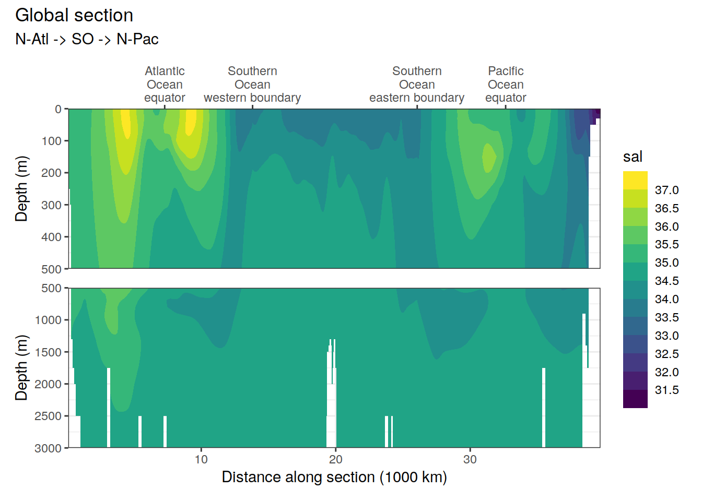
| Version | Author | Date |
|---|---|---|
| f088f55 | jens-daniel-mueller | 2022-04-01 |
| dde77eb | jens-daniel-mueller | 2022-04-01 |
| 86aee67 | jens-daniel-mueller | 2021-03-26 |
| a5846c5 | jens-daniel-mueller | 2020-12-18 |
| 88967c0 | jens-daniel-mueller | 2020-12-16 |
| fd1a2c9 | jens-daniel-mueller | 2020-12-15 |
| 914159f | jens-daniel-mueller | 2020-12-11 |
| 58359ac | jens-daniel-mueller | 2020-11-27 |
| 92e10aa | Jens Müller | 2020-11-27 |
2.10 Neutral density plots
2.10.1 Surface map
p_map_climatology(
df = WOA18_sal_temp,
var = "gamma")
| Version | Author | Date |
|---|---|---|
| 9451c4b | jens-daniel-mueller | 2022-04-06 |
| 7e94d73 | jens-daniel-mueller | 2022-04-06 |
| dde77eb | jens-daniel-mueller | 2022-04-01 |
| 02a01ef | jens-daniel-mueller | 2022-03-10 |
| fecc329 | jens-daniel-mueller | 2022-02-25 |
| 2a50fa9 | jens-daniel-mueller | 2021-10-28 |
| 0ef91d5 | jens-daniel-mueller | 2021-05-12 |
| ace484d | jens-daniel-mueller | 2021-05-12 |
| 86aee67 | jens-daniel-mueller | 2021-03-26 |
| 88967c0 | jens-daniel-mueller | 2020-12-16 |
| fd1a2c9 | jens-daniel-mueller | 2020-12-15 |
| cc07d29 | jens-daniel-mueller | 2020-12-14 |
| 58359ac | jens-daniel-mueller | 2020-11-27 |
| 92e10aa | Jens Müller | 2020-11-27 |
2.10.2 Section
p_section_global(
df = WOA18_sal_temp,
var = "gamma")
| Version | Author | Date |
|---|---|---|
| f088f55 | jens-daniel-mueller | 2022-04-01 |
| dde77eb | jens-daniel-mueller | 2022-04-01 |
| 86aee67 | jens-daniel-mueller | 2021-03-26 |
| a5846c5 | jens-daniel-mueller | 2020-12-18 |
| 88967c0 | jens-daniel-mueller | 2020-12-16 |
| fd1a2c9 | jens-daniel-mueller | 2020-12-15 |
| cc07d29 | jens-daniel-mueller | 2020-12-14 |
| 58359ac | jens-daniel-mueller | 2020-11-27 |
| 92e10aa | Jens Müller | 2020-11-27 |
3 Climatology Nuts and O2
3.1 Read nc files
Data are read-in looping over all relevant files, thereby reproducing the same subsetting steps as applied above to the salintity and temperature fields.
# Keep grid cells of WOA18 sal temp data set, to join with
WOA18_nuts_O2 <-
WOA18_sal_temp %>%
select(lon, lat, depth)
rm(WOA18_sal_temp)
# create file list
file_list <- c(
paste(path_woa2018, "phosphate/all/1.00/woa18_all_p00_01.nc", sep = ""),
paste(path_woa2018, "nitrate/all/1.00/woa18_all_n00_01.nc", sep = ""),
paste(path_woa2018, "silicate/all/1.00/woa18_all_i00_01.nc", sep = ""),
paste(path_woa2018, "oxygen/all/1.00/woa18_all_o00_01.nc", sep = ""),
paste(path_woa2018, "AOU/all/1.00/woa18_all_A00_01.nc", sep = "")
)
# read, plot and join data sets while looping over file list
for (file in file_list) {
# file <- file_list[1]
# open file
WOA18 <- tidync(file)
WOA18_tibble <- WOA18 %>% hyper_tibble()
# extract parameter name
parameter <- str_split(file, pattern = "00_", simplify = TRUE)[1]
parameter <- str_split(parameter, pattern = "all_", simplify = TRUE)[2]
parameter <- paste(parameter, "_an", sep = "")
print(file)
WOA18_tibble <- WOA18_tibble %>%
select(all_of(parameter),
lon, lat, depth) %>%
mutate(lon = if_else(lon < 20, lon + 360, lon))
# apply general basin mask
WOA18_tibble <- inner_join(WOA18_tibble, basinmask)
# subset depth levels
WOA18_tibble <- WOA18_tibble %>%
filter(depth %in% params_global$depth_levels_33)
# join with previous WOA data and keep only rows in existing data frame
# this is equal to applying the basinmask
WOA18_nuts_O2 <- left_join(
x = WOA18_nuts_O2,
y = WOA18_tibble)
# plot maps
print(
p_map_climatology(
df = WOA18_nuts_O2,
var = parameter)
)
# plot sections
print(p_section_global(
df = WOA18_nuts_O2,
var = parameter
))
}[1] "/nfs/kryo/work/updata/woa2018/phosphate/all/1.00/woa18_all_p00_01.nc"
| Version | Author | Date |
|---|---|---|
| 9451c4b | jens-daniel-mueller | 2022-04-06 |
| 7e94d73 | jens-daniel-mueller | 2022-04-06 |
| dde77eb | jens-daniel-mueller | 2022-04-01 |
| 02a01ef | jens-daniel-mueller | 2022-03-10 |
| fecc329 | jens-daniel-mueller | 2022-02-25 |
| 2a50fa9 | jens-daniel-mueller | 2021-10-28 |
| 0ef91d5 | jens-daniel-mueller | 2021-05-12 |
| ace484d | jens-daniel-mueller | 2021-05-12 |
| 86aee67 | jens-daniel-mueller | 2021-03-26 |
| 88967c0 | jens-daniel-mueller | 2020-12-16 |
| fd1a2c9 | jens-daniel-mueller | 2020-12-15 |
| cc07d29 | jens-daniel-mueller | 2020-12-14 |
| ae7aa2e | jens-daniel-mueller | 2020-12-11 |
| 914159f | jens-daniel-mueller | 2020-12-11 |
| 825309e | jens-daniel-mueller | 2020-11-27 |
| 58359ac | jens-daniel-mueller | 2020-11-27 |
| 92e10aa | Jens Müller | 2020-11-27 |
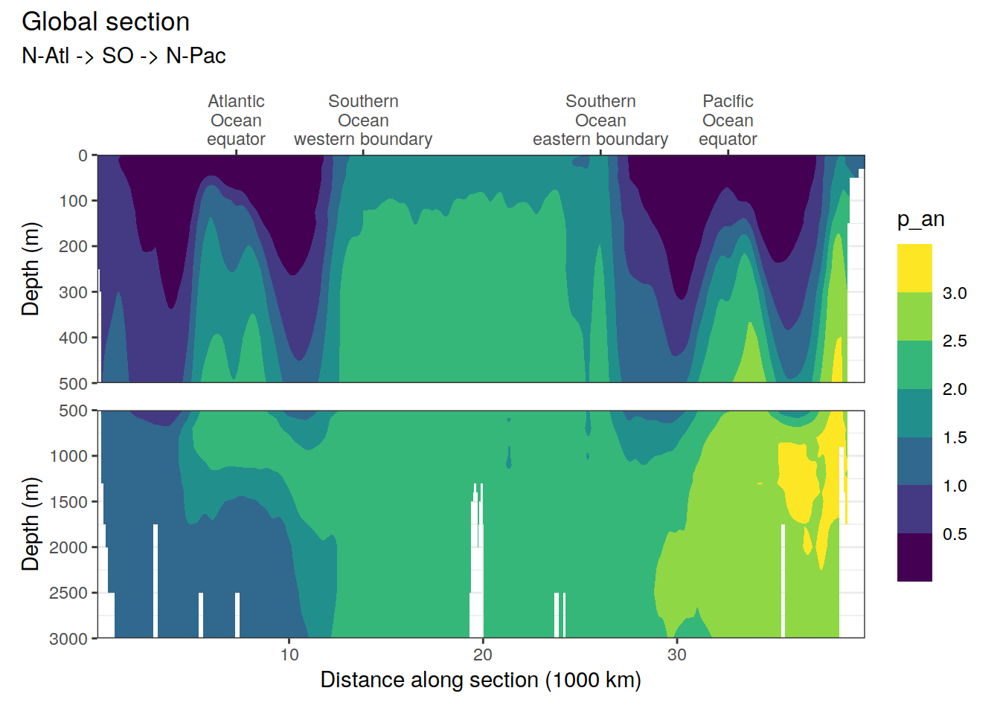
| Version | Author | Date |
|---|---|---|
| f088f55 | jens-daniel-mueller | 2022-04-01 |
| dde77eb | jens-daniel-mueller | 2022-04-01 |
| 86aee67 | jens-daniel-mueller | 2021-03-26 |
| a5846c5 | jens-daniel-mueller | 2020-12-18 |
| 88967c0 | jens-daniel-mueller | 2020-12-16 |
| fd1a2c9 | jens-daniel-mueller | 2020-12-15 |
| 914159f | jens-daniel-mueller | 2020-12-11 |
| 58359ac | jens-daniel-mueller | 2020-11-27 |
| 92e10aa | Jens Müller | 2020-11-27 |
[1] "/nfs/kryo/work/updata/woa2018/nitrate/all/1.00/woa18_all_n00_01.nc"
| Version | Author | Date |
|---|---|---|
| 9451c4b | jens-daniel-mueller | 2022-04-06 |
| 7e94d73 | jens-daniel-mueller | 2022-04-06 |
| f088f55 | jens-daniel-mueller | 2022-04-01 |
| dde77eb | jens-daniel-mueller | 2022-04-01 |
| 02a01ef | jens-daniel-mueller | 2022-03-10 |
| fecc329 | jens-daniel-mueller | 2022-02-25 |
| 2a50fa9 | jens-daniel-mueller | 2021-10-28 |
| 0ef91d5 | jens-daniel-mueller | 2021-05-12 |
| ace484d | jens-daniel-mueller | 2021-05-12 |
| 86aee67 | jens-daniel-mueller | 2021-03-26 |
| 88967c0 | jens-daniel-mueller | 2020-12-16 |
| fd1a2c9 | jens-daniel-mueller | 2020-12-15 |
| cc07d29 | jens-daniel-mueller | 2020-12-14 |
| ae7aa2e | jens-daniel-mueller | 2020-12-11 |
| 914159f | jens-daniel-mueller | 2020-12-11 |
| 825309e | jens-daniel-mueller | 2020-11-27 |
| 58359ac | jens-daniel-mueller | 2020-11-27 |
| 92e10aa | Jens Müller | 2020-11-27 |
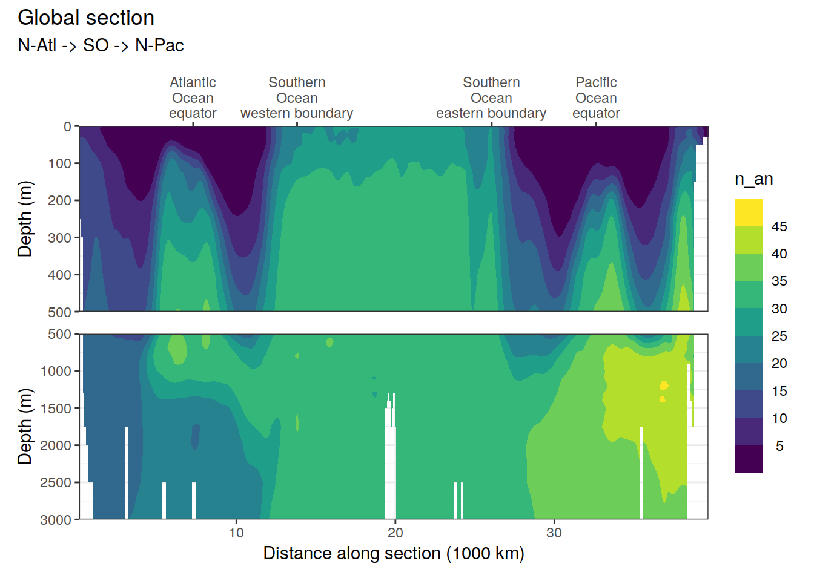
| Version | Author | Date |
|---|---|---|
| f088f55 | jens-daniel-mueller | 2022-04-01 |
| dde77eb | jens-daniel-mueller | 2022-04-01 |
| 86aee67 | jens-daniel-mueller | 2021-03-26 |
| a5846c5 | jens-daniel-mueller | 2020-12-18 |
| 88967c0 | jens-daniel-mueller | 2020-12-16 |
| fd1a2c9 | jens-daniel-mueller | 2020-12-15 |
| 914159f | jens-daniel-mueller | 2020-12-11 |
| 58359ac | jens-daniel-mueller | 2020-11-27 |
| 92e10aa | Jens Müller | 2020-11-27 |
[1] "/nfs/kryo/work/updata/woa2018/silicate/all/1.00/woa18_all_i00_01.nc"
| Version | Author | Date |
|---|---|---|
| 9451c4b | jens-daniel-mueller | 2022-04-06 |
| 7e94d73 | jens-daniel-mueller | 2022-04-06 |
| dde77eb | jens-daniel-mueller | 2022-04-01 |
| 02a01ef | jens-daniel-mueller | 2022-03-10 |
| fecc329 | jens-daniel-mueller | 2022-02-25 |
| 2a50fa9 | jens-daniel-mueller | 2021-10-28 |
| 0ef91d5 | jens-daniel-mueller | 2021-05-12 |
| ace484d | jens-daniel-mueller | 2021-05-12 |
| 86aee67 | jens-daniel-mueller | 2021-03-26 |
| 88967c0 | jens-daniel-mueller | 2020-12-16 |
| fd1a2c9 | jens-daniel-mueller | 2020-12-15 |
| cc07d29 | jens-daniel-mueller | 2020-12-14 |
| ae7aa2e | jens-daniel-mueller | 2020-12-11 |
| 914159f | jens-daniel-mueller | 2020-12-11 |
| 825309e | jens-daniel-mueller | 2020-11-27 |
| 58359ac | jens-daniel-mueller | 2020-11-27 |
| 92e10aa | Jens Müller | 2020-11-27 |
| Version | Author | Date |
|---|---|---|
| f088f55 | jens-daniel-mueller | 2022-04-01 |
| dde77eb | jens-daniel-mueller | 2022-04-01 |
| 86aee67 | jens-daniel-mueller | 2021-03-26 |
| a5846c5 | jens-daniel-mueller | 2020-12-18 |
| 88967c0 | jens-daniel-mueller | 2020-12-16 |
| fd1a2c9 | jens-daniel-mueller | 2020-12-15 |
| 914159f | jens-daniel-mueller | 2020-12-11 |
| 58359ac | jens-daniel-mueller | 2020-11-27 |
| 92e10aa | Jens Müller | 2020-11-27 |
[1] "/nfs/kryo/work/updata/woa2018/oxygen/all/1.00/woa18_all_o00_01.nc"
| Version | Author | Date |
|---|---|---|
| 9451c4b | jens-daniel-mueller | 2022-04-06 |
| 7e94d73 | jens-daniel-mueller | 2022-04-06 |
| dde77eb | jens-daniel-mueller | 2022-04-01 |
| 02a01ef | jens-daniel-mueller | 2022-03-10 |
| fecc329 | jens-daniel-mueller | 2022-02-25 |
| 2a50fa9 | jens-daniel-mueller | 2021-10-28 |
| 0ef91d5 | jens-daniel-mueller | 2021-05-12 |
| ace484d | jens-daniel-mueller | 2021-05-12 |
| 86aee67 | jens-daniel-mueller | 2021-03-26 |
| 88967c0 | jens-daniel-mueller | 2020-12-16 |
| fd1a2c9 | jens-daniel-mueller | 2020-12-15 |
| cc07d29 | jens-daniel-mueller | 2020-12-14 |
| ae7aa2e | jens-daniel-mueller | 2020-12-11 |
| 914159f | jens-daniel-mueller | 2020-12-11 |
| 825309e | jens-daniel-mueller | 2020-11-27 |
| 58359ac | jens-daniel-mueller | 2020-11-27 |
| 92e10aa | Jens Müller | 2020-11-27 |
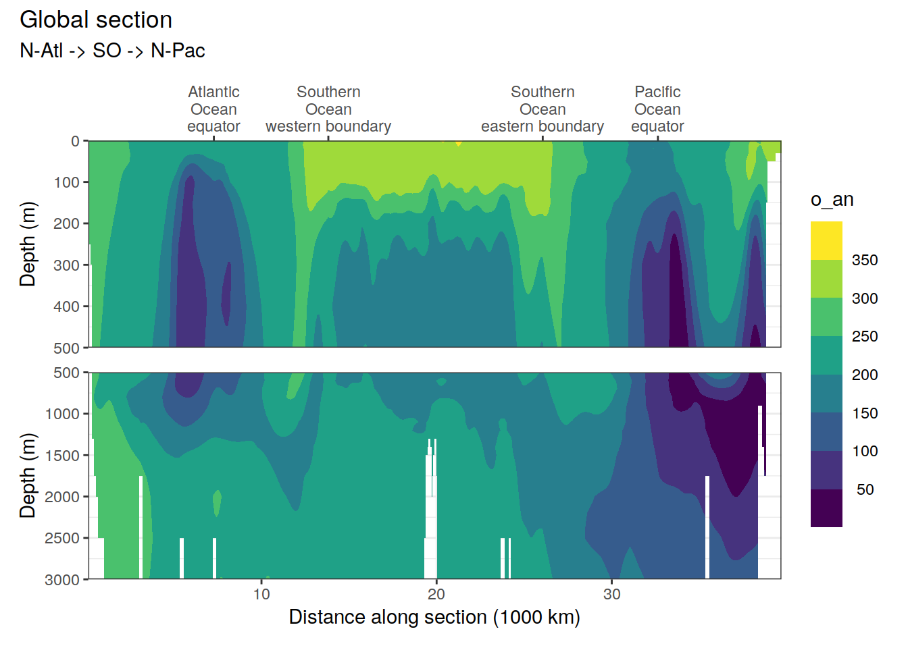
| Version | Author | Date |
|---|---|---|
| f088f55 | jens-daniel-mueller | 2022-04-01 |
| dde77eb | jens-daniel-mueller | 2022-04-01 |
| 86aee67 | jens-daniel-mueller | 2021-03-26 |
| a5846c5 | jens-daniel-mueller | 2020-12-18 |
| 88967c0 | jens-daniel-mueller | 2020-12-16 |
| fd1a2c9 | jens-daniel-mueller | 2020-12-15 |
| 914159f | jens-daniel-mueller | 2020-12-11 |
| 58359ac | jens-daniel-mueller | 2020-11-27 |
| 92e10aa | Jens Müller | 2020-11-27 |
[1] "/nfs/kryo/work/updata/woa2018/AOU/all/1.00/woa18_all_A00_01.nc"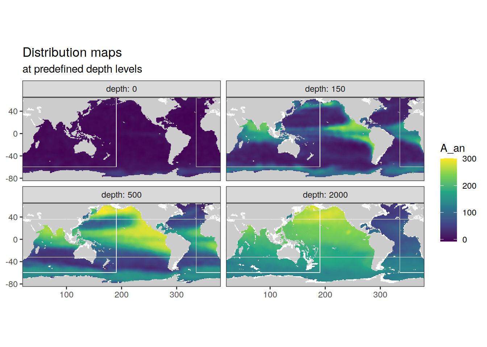
| Version | Author | Date |
|---|---|---|
| 9451c4b | jens-daniel-mueller | 2022-04-06 |
| 7e94d73 | jens-daniel-mueller | 2022-04-06 |
| dde77eb | jens-daniel-mueller | 2022-04-01 |
| 02a01ef | jens-daniel-mueller | 2022-03-10 |
| fecc329 | jens-daniel-mueller | 2022-02-25 |
| 2a50fa9 | jens-daniel-mueller | 2021-10-28 |
| 0ef91d5 | jens-daniel-mueller | 2021-05-12 |
| ace484d | jens-daniel-mueller | 2021-05-12 |
| 86aee67 | jens-daniel-mueller | 2021-03-26 |
| 88967c0 | jens-daniel-mueller | 2020-12-16 |
| fd1a2c9 | jens-daniel-mueller | 2020-12-15 |
| cc07d29 | jens-daniel-mueller | 2020-12-14 |
| ae7aa2e | jens-daniel-mueller | 2020-12-11 |
| 914159f | jens-daniel-mueller | 2020-12-11 |
| 825309e | jens-daniel-mueller | 2020-11-27 |
| 58359ac | jens-daniel-mueller | 2020-11-27 |
| 92e10aa | Jens Müller | 2020-11-27 |
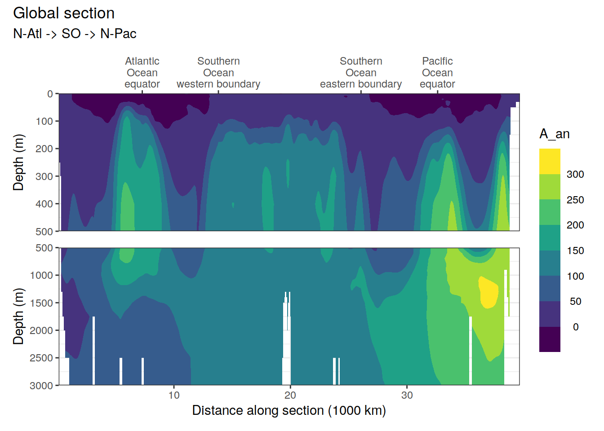
| Version | Author | Date |
|---|---|---|
| f088f55 | jens-daniel-mueller | 2022-04-01 |
| dde77eb | jens-daniel-mueller | 2022-04-01 |
| 86aee67 | jens-daniel-mueller | 2021-03-26 |
| a5846c5 | jens-daniel-mueller | 2020-12-18 |
| 88967c0 | jens-daniel-mueller | 2020-12-16 |
| fd1a2c9 | jens-daniel-mueller | 2020-12-15 |
| 914159f | jens-daniel-mueller | 2020-12-11 |
| 58359ac | jens-daniel-mueller | 2020-11-27 |
| 92e10aa | Jens Müller | 2020-11-27 |
3.2 Write file
WOA18_nuts_O2 %>%
rename(phosphate = p_an,
nitrate = n_an,
silicate = i_an,
oxygen = o_an,
aou = A_an) %>%
write_csv(paste(path_preprocessing,
"WOA18_nuts_O2.csv",
sep = ""))
sessionInfo()R version 4.1.2 (2021-11-01)
Platform: x86_64-pc-linux-gnu (64-bit)
Running under: openSUSE Leap 15.3
Matrix products: default
BLAS: /usr/local/R-4.1.2/lib64/R/lib/libRblas.so
LAPACK: /usr/local/R-4.1.2/lib64/R/lib/libRlapack.so
locale:
[1] LC_CTYPE=en_US.UTF-8 LC_NUMERIC=C
[3] LC_TIME=en_US.UTF-8 LC_COLLATE=en_US.UTF-8
[5] LC_MONETARY=en_US.UTF-8 LC_MESSAGES=en_US.UTF-8
[7] LC_PAPER=en_US.UTF-8 LC_NAME=C
[9] LC_ADDRESS=C LC_TELEPHONE=C
[11] LC_MEASUREMENT=en_US.UTF-8 LC_IDENTIFICATION=C
attached base packages:
[1] stats graphics grDevices utils datasets methods base
other attached packages:
[1] stars_0.5-5 sf_1.0-5 abind_1.4-5 geosphere_1.5-14
[5] oce_1.5-0 gsw_1.0-6 reticulate_1.23 tidync_0.2.4
[9] colorspace_2.0-2 marelac_2.1.10 shape_1.4.6 ggforce_0.3.3
[13] metR_0.11.0 scico_1.3.0 patchwork_1.1.1 collapse_1.7.0
[17] forcats_0.5.1 stringr_1.4.0 dplyr_1.0.7 purrr_0.3.4
[21] readr_2.1.1 tidyr_1.1.4 tibble_3.1.6 ggplot2_3.3.5
[25] tidyverse_1.3.1 workflowr_1.7.0
loaded via a namespace (and not attached):
[1] ellipsis_0.3.2 class_7.3-20 rprojroot_2.0.2 fs_1.5.2
[5] rstudioapi_0.13 proxy_0.4-26 farver_2.1.0 bit64_4.0.5
[9] fansi_1.0.2 lubridate_1.8.0 xml2_1.3.3 ncdf4_1.19
[13] knitr_1.37 polyclip_1.10-0 jsonlite_1.7.3 broom_0.7.11
[17] dbplyr_2.1.1 png_0.1-7 compiler_4.1.2 httr_1.4.2
[21] backports_1.4.1 assertthat_0.2.1 Matrix_1.4-0 fastmap_1.1.0
[25] cli_3.1.1 later_1.3.0 tweenr_1.0.2 htmltools_0.5.2
[29] tools_4.1.2 gtable_0.3.0 glue_1.6.0 rappdirs_0.3.3
[33] Rcpp_1.0.8 cellranger_1.1.0 jquerylib_0.1.4 RNetCDF_2.5-2
[37] vctrs_0.3.8 lwgeom_0.2-8 xfun_0.29 ps_1.6.0
[41] rvest_1.0.2 lifecycle_1.0.1 ncmeta_0.3.0 getPass_0.2-2
[45] MASS_7.3-55 scales_1.1.1 vroom_1.5.7 hms_1.1.1
[49] promises_1.2.0.1 parallel_4.1.2 RColorBrewer_1.1-2 yaml_2.2.1
[53] sass_0.4.0 stringi_1.7.6 highr_0.9 e1071_1.7-9
[57] checkmate_2.0.0 rlang_0.4.12 pkgconfig_2.0.3 evaluate_0.14
[61] lattice_0.20-45 SolveSAPHE_2.1.0 labeling_0.4.2 bit_4.0.4
[65] processx_3.5.2 tidyselect_1.1.1 here_1.0.1 seacarb_3.3.0
[69] magrittr_2.0.1 R6_2.5.1 generics_0.1.1 DBI_1.1.2
[73] pillar_1.6.4 haven_2.4.3 whisker_0.4 withr_2.4.3
[77] units_0.7-2 sp_1.4-6 modelr_0.1.8 crayon_1.4.2
[81] KernSmooth_2.23-20 utf8_1.2.2 tzdb_0.2.0 rmarkdown_2.11
[85] isoband_0.2.5 grid_4.1.2 readxl_1.3.1 data.table_1.14.2
[89] callr_3.7.0 git2r_0.29.0 reprex_2.0.1 digest_0.6.29
[93] classInt_0.4-3 httpuv_1.6.5 munsell_0.5.0 viridisLite_0.4.0
[97] bslib_0.3.1